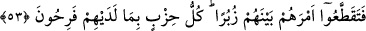

Allah’ım bizi teveccüh ve münâcât ehlinden eyle!
52. “Şüphesiz bu bir tek ümmet olarak sizin ümmetinizdir; ben de sizin
Rabbinizim. Öyle ise benden sakının” (denildi).
Ey peygamberler, “Şüphesiz bu” yâni İslâm ve tevhid milleti/dîni, “bir tek ümmet
olarak” asırların değişmesiyle değişmeyen şeriatın asıllarında (usûl) tek bir millet ve
şerîat olarak “sizin ümmetinizdir.” Yâni sizin milletiniz ve şerîatınızdır. Furûdaki
ihtilâf ise ‘dinde ihtilâf’ diye isimlendirilmez. Hayızlı kadın da temiz kadın da
mükellefiyetleri farklı olsa da aynı din üzeredir.
Kurtubî der ki: “Burada “ümmet” din anlamındadır. “Biz babalarımızı bir ümmet
(yâni birleştikleri bir din) üzerinde bulduk.” (ez-Zuhruf, 43/22) âyeti de bu mânâyadır.
İslâm ve tevhid dînine doğruluk ve düzgünlük konusunda zuhûrunun kemâline, bu
sebeple de gözle görülen şeyler arasına girdiğine dikkat çekmek için “bu” diye işâret
edilmiştir. “Bu” zamirinin peygamberlere îman eden ümmetlere işâret olduğu da
söylenmiştir. Buna göre mânâ şöyledir: ‘Şüphesiz bu îman ve ibâdette tevhid üzere
ittifak etmiş olarak sizin bir tek topluluğunuzdur.’ Âyetin devamı da bu mânâya uygun
düşmektedir.
“Ben de sizin Rabbinizim.” Rubûbiyyette benim ortağım yoktur. “Öyle ise”
topluluktan ayrılma ve ihtilâfa düşme durumunda “benden sakının” denildi. Burada
sakınması istenen hem peygamberler hem de ümmetlerdir. Peygamberler hakkında bu
emir onları heyecana getirmek ve harekete geçirmek içindir. Ümmetler hakkında ise
sakındırmak ve vâcib kılmak içindir.
Tefsîr-i Kebîr’de der ki: “Burada Allah Teâlâ’yı ma‘rifet ve O’na karşı işlenecek
günahlardan sakınma konusunda hepsinin bir din üzere olduklarına dikkat
çekilmektedir.”
53. Ne var ki insanlar kendi aralarında işlerini parça parça böldüler. Her gurup
kendilerinde bulunan (fikir ve davranış) ile sevinip böbürlenmektedirler.
“Ne var ki insanlar kendi aralarında” bir ve bütün olduğu halde din “işlerini parça
parça böldüler.” Farklı dinler haline getirdiler. Parça parça, yani grup grup oldular ve
ihtilâfa düştüler.
“Her gurup” yâni bölüklere ayrılanlardan her topluluk “kendilerinde bulunan” seçip
tercih ettikleri din “ile sevinip böbürlenmektedirler” onu beğenirler ve hak olduğuna
inanırlar.